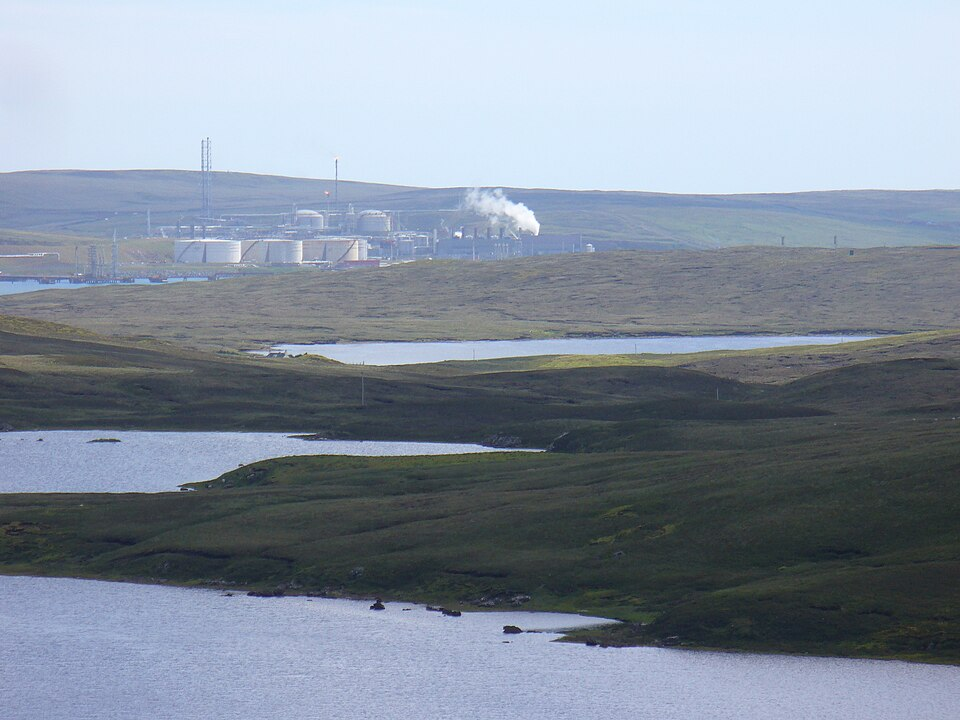

This story is about the companies that publish the oil prices every contract is measured against, mainly S&P Global Platts. For how it all works I rely on Platts' own how-we-do-it pages, regulators' documents, and research from the Oxford Institute for Energy Studies. Some of that research is from 2012–13, so I flag when a number is old. For a few S&P Global pages I could read only the headline and summary, not the full article, and I flag those too. Some companies and people mentioned were investigated or fined, but none of that accused Platts of wrongdoing, and I say what was and wasn't found. Dollar amounts are shown in Singapore dollars at about S$1.30 to the US dollar (the rate in November 2026), rounded. This is an explainer, not investment advice.
The short version
- Somewhere between two-thirds and 78% of the oil the world ships across borders is priced off one family of reference numbers called Brent (the exact share depends on who is counting). The main Brent number, Dated Brent, is set every day at 4:30pm London time. Its Gulf cousin, Dubai, is set at 4:30pm Singapore time. The company that sets both is S&P Global Platts, a data firm.
- Brent is now a blend, not a single oil. The North Sea oil fields behind it are drying up: the oil feeding the number fell from 850,000 to under 700,000 barrels a day between late 2020 and early 2023. So in 2023 Platts started counting a Texas oil, WTI Midland, as part of "Brent" too.
- The Dubai number is worse off: actual Dubai oil fell from 400,000 barrels a day in the early 1990s to about 60,000 by 2012. It keeps going by counting several other Gulf oils and letting traders deal in small 25,000-barrel lots. One 2012 study found that on half of all days, not a single one of those lots changed hands.
- Because so much money rides on so few trades, watchdogs have looked in: EU raids in 2013 (the oil part was reportedly dropped in 2015) and a US$95.7 million (about S$124 million) US penalty on the trading firm Vitol in 2020 over two other Platts numbers. Neither case accused Platts itself.
- On 1 November 2026, Abu Dhabi's oil company ADNOC switched all its oil to be priced off the Dubai number, pouring even more of the world's oil onto that one afternoon price.
Part 1The number nobody sees
Nobody just buys "oil". They buy a specific type of oil, loading at a specific port, in a specific month. And here is the surprising part: the contract usually doesn't say how much it costs. Instead it says something like "whatever the Brent price is on the day it loads, plus two dollars a barrel". So someone still has to work out what "the Brent price" actually was that day, in a way both the buyer and seller trust.
That someone is a price reporting agency: a data and news company, not an oil company. It doesn't pump oil, ship it, or refine it. Each afternoon it opens a short trading period called a window, watches the offers to buy and sell and the deals that actually happen, decides which of them count, and then publishes one number for the day. The biggest of these firms is S&P Global Platts, which one 2013 news report called "the world's leading oil pricing agency". You've probably never heard of it, because it sells to industry professionals, and because the oil price you see flash across the TV news is a different thing (a futures price, basically a bet on where oil is heading, not the price in a real cargo deal).
Here is the whole point of this story. An enormous amount of money hangs on a number that comes from very few trades. ICE, the company that runs the Brent futures market, says around 78% of the oil shipped between countries is priced off Brent one way or another (it credits a firm called Energy Intelligence for that figure). Other estimates are lower: ICE elsewhere says "nearly two-thirds", and S&P Global says more than two-thirds. They disagree because they count the indirect cases (like Dubai, which is itself loosely tied to Brent) differently. Whichever figure you pick, it's a huge share of the world's oil.
Imagine a city whose grocers agree that every mango, in every lorry, is priced off whatever one small stall sells a few crates for when the closing bell rings. Most days it works. But one buyer, or one stubborn seller, at the bell can move the price of the whole city's fruit. That is the worry about thin benchmarks.
Part 2"Brent" is a recipe, not a single oil
Start with the word "Brent". It began as the name of one real oil field in the North Sea. By the US government's energy statisticians, that field produced the most it ever would in 1982, about 504,000 barrels a day, and it's now being shut down for good. You can't keep a world-famous price running off one field that's dying, so over the years Platts kept folding in oil from other fields. Scroll through how the recipe changed.
The label is still "Brent". Less and less of the oil is.

A jam maker's strawberries run short, so the recipe adds raspberries, then blueberries, then fruit from another country. The label still says "Strawberry". Buyers accept it as long as the taste stays the same, and the maker has rules, like quality adjustments, that keep it so. That is how Dated Brent has survived its own oil running out.
So how do six different oils produce one price? Reuters explains the rule: Brent takes the price of the cheapest oil in the mix on that day, after a fair adjustment for shipping costs and quality differences. Cheapest oil of the day wins. The point of adding more oils is that the more there is, the harder it is for any single seller to nudge the price their way. Not everyone liked mixing in American oil. Jorge Montepeque, whom Reuters calls the man who originally designed Dated Brent, said it looked like "an ocean too far".
Wait, doesn't adding a new oil change the price?
This is the thing that trips most people up. Brent is not an average of the oils in it. If it were, dropping in a cheaper oil would drag the whole number down. It works differently:
- Cheapest-wins, not a blend. Each day the number follows whichever cargo is offered most cheaply. A newly added oil only moves the price if it turns out to be the cheapest that day. If it's dearer, it just sits in the pool unused and changes nothing.
- Every oil is put on the same yardstick first. Oils differ in weight and sulfur, and a lighter, cleaner oil is worth more. Platts adjusts each one for quality and for the cost of shipping it, so a barrel of Texas WTI Midland is compared to North Sea oil like-for-like. Adding Texas oil doesn't pull the number toward "the Texas price"; it competes only after being normalised.
- More oil means harder to push, not cheaper. The reason to add streams is to widen the pool so no single seller can corner the window and shove the number around. Adding oil makes the price steadier and harder to rig, not automatically higher or lower.
In short: a new oil can only pull Brent down to a lower floor if it is genuinely the cheapest; it can never push Brent up just by being added. That is why the label can keep saying "Brent" while the ingredients change underneath.
Which raises the obvious next question: how much of each oil is in Brent? The honest answer is that there is no fixed percentage. Brent is not a set recipe like "40% Forties, 20% Oseberg". The six streams are simply eligible to set the price, and the mix that actually matters changes day to day with whichever cargoes are cheapest and available. What you can measure is how much of each oil is physically loading, and even that shifts constantly as North Sea fields decline and US cargoes come and go.
Part 3The Dubai price, with hardly any Dubai in it
If Brent is a recipe missing some of its ingredients, Dubai is a recipe with the main ingredient almost entirely gone. "Dubai" is the reference number used for Gulf oil sold to Asia. In a 2012 paper for the Oxford Institute for Energy Studies, the researcher Bassam Fattouh tracked what happened to the actual oil coming out of Dubai.
So how does a price survive without the oil it's named after? Two patches. First, Platts lets other Gulf oils count as "Dubai" too. It started allowing Oman oil in the early 2000s, and today the Dubai number can be based on Dubai, Oman, Upper Zakum, Al-Shaheen, and (with an adjustment for quality) Murban.
Second, in 2004 Platts let traders deal in small slices. A full shipload is 500,000 barrels (475,000 in the 2012 paper), which is more than most traders want to buy or sell at once. So the window lets them trade it in 25,000-barrel chunks instead. Collect twenty chunks from the same partner and you've bought a full shipload that must actually be delivered; anything less is just settled in cash. This made it far easier to take part in the window. But it also meant a single tiny trade could end up being the last, and therefore the official, price of the day.
That was exactly Fattouh's worry: so few firms did the trading that one of them, buying as little as a single 25,000-barrel chunk, could sway the price of millions of barrels elsewhere. He noted the counter-argument too: plenty of others watch the window and would push back fast. A 2013 article from the side of a rival marketplace, the Dubai Mercantile Exchange, put it more harshly, saying the Dubai setup "can have as few as two or three participants and regularly does not trade at all". That's a competitor talking down a rival, so take it with a pinch of salt.
And a lot of oil is priced off this one number. Saudi Aramco, for instance, said in July 2025 that it set the August price of its Arab Light oil to Asia at US$2.20 a barrel (about S$2.90) above the average of the Oman and Dubai numbers. The figure it adds its $2.20 to is the one this little afternoon window spits out.
Part 4How the daily price actually gets made
So what exactly is this "window"? Fattouh's description is still the clearest. Think of it as a short, supervised trading session, like a stock market's final half hour, but with two twists. First, everyone can see who is making each offer; the firms aren't anonymous. Second, a person at Platts, not an automatic rulebook, decides which trades count toward the final number. The Dubai price is built from actual completed deals first; if there were none, from the best offers to buy and sell; and if even those are missing, from related side-bets traded around it.
Platts says it has no financial stake in whether oil is high or low; its job is simply to record what the market is willing to do. The key step is that filter: a human editor, following published rules, turns a messy half hour of trading into one clean number. Platts publishes those rules and any changes to them, and its 2026 Dubai notes show it's still tweaking them.
There's a Singapore angle here, and it's more than just the clock. The Dubai window runs on Singapore time. A 2013 paper noted that Gulf oil producers had long leaned on prices "established by predominantly Singapore-based traders and assessed by the price reporting agency Platts". Singapore's own fuels, the petrol, diesel, jet fuel and fuel oil traded here, are usually priced off a separate daily average called the Mean of Platts Singapore (MOPS), with each cargo sold a little above or below it.
Part 5Who checks the referee?
When a small group of traders can set a number that moves billions of dollars, watchdogs pay attention. Three moments show what they looked into, and what they did and didn't conclude.
| When | What happened |
|---|---|
| Oct 2012 | Prompted by the world's leading economies in 2011, the global club of market regulators (IOSCO) published a set of good-practice rules for firms like Platts that publish oil prices.Advice, not a licence they have to hold. A follow-up review came in 2014. |
| May 2013 | EU competition investigators turned up at BP, Shell and Statoil, and Platts said the EU also looked over its London office, chasing a suspicion that companies had fed distorted prices into the daily window. Statoil linked it to Platts' end-of-day pricing and said it might go back to 2002.The EU stressed a visit doesn't mean anyone is guilty. Bloomberg reported in Dec 2015 that the oil part was dropped; a separate ethanol thread carried on. |
| Dec 2020 | The US derivatives regulator (the CFTC) ordered the trading firm Vitol to pay US$95.7 million (about S$124 million) over misconduct that included trying to rig two Platts fuel-oil prices in 2014 and 2015.The total mixes fines and returned profits, and part of the case was about bribery abroad. These were US fuel-oil prices, not Brent or Dubai. |
The built-in defence is the one from Part 2: pour more oil into the number so no single trade can shove it around. The Dubai number has always had a thinner, more awkward history on that front, which is why Abu Dhabi's attempt to build an alternative, and then its U-turn, is the next part of the story.
Part 6A busier window
Back in March 2021, ICE set up a futures market in Abu Dhabi for ADNOC's main oil, Murban, trying to make Murban a big-name price in its own right. This year ADNOC went the opposite way. On 31 July 2026 it announced that from 1 November 2026 it would price all four of its oils (Murban, Das, Umm Lulu and Upper Zakum) off the Dubai number instead of its own Murban market. In plain terms, it gave up on its homegrown price and plugged back into the Dubai window, publishing how much above or below Dubai each oil would sell the month before it ships.
ADNOC said the switch matches its prices better to the month the oil actually loads and shows its "commitment to pricing transparency". Reuters tied the timing to this year's war involving Iran, which snarled Gulf oil shipments through the Strait of Hormuz and left traders holding Abu Dhabi oil with heavy losses on their bets. One trader called the move sudden. ICE said its Murban futures market would keep running for months that still had active contracts.
The Dubai window itself had a frantic spring. An S&P Global headline says trading hit a record high in March during the war, with its summary citing 1,920 small-lot trades and 82 full shiploads (I could read only the headline and summary, not the full article). Set that against Fattouh's 2012 finding of days when nothing traded at all. Either the window is far more active now, or March was just an unusual month. One busy month can't tell you which.
Here's my own read, and it's only that. Murban and Upper Zakum are already two of the oils that can count toward the Dubai number. From November, they're also priced off it. So the oil that sets the number and the oil that follows the number are more and more the same oil. That can be healthy (more trading in the window) or risky (a loop that mostly checks itself, with little outside it to keep it honest).
When the producer joins the window, the window decides its own price too.
Part 7How we got here
- 1982The Brent field peaks at 504,000 barrels a day.504k b/d
- 1987–88Platts starts publishing the Dated Brent price in 1987. In 1988 major OPEC members stop setting their prices by decree and start pricing Asia-bound oil off Dubai instead.
- 2002Forties and Oseberg join Dated Brent. Oman crude is allowed into Dubai around the same time.
- 2004Platts brings in 25,000-barrel "partials" for Dubai.
- 2007Ekofisk joins the Brent basket.
- Oct 2012IOSCO publishes principles for oil price reporting agencies.
- May 2013EU inspectors visit BP, Shell and Statoil and review Platts' London premises. The oil probe is reportedly dropped in 2015.
- 2018Troll joins Dated Brent.
- Dec 2020CFTC orders Vitol to pay US$95.7 million over a scheme that included two Platts benchmarks.
- Mar 2021ICE launches Murban futures in Abu Dhabi.
- May 2023WTI Midland becomes the sixth stream in Dated Brent.6 streams
- Mar 2026S&P Global reports record Platts Dubai trading.
- 31 Jul 2026ADNOC announces it will price all its crude off Platts Dubai.
- 1 Nov 2026The change takes effect. You are here.
Next time an oil price jumps or a contract is "linked to Brent", ask two things.
How many barrels actually changed hands to set that number?
Who was on the other side of the bid, and who checks the one who decides?
NotesSources
Each number and where it comes from.
- Share of exported crude priced off Brent (around 78%, Energy Intelligence): ICE. "Nearly two-thirds of the spot export market", 600,000-barrel cargoes: ICE, "Evolution of Brent". "More than two-thirds" of traded crude: S&P Global's Dated Brent page (read through a search summary; the page blocks my fetcher).
- Timestamps (Dated Brent 16:30 London; Platts Dubai 16:30 Singapore), Dubai basket (Dubai, Oman, Upper Zakum, Al-Shaheen, Murban with premium), 25,000-barrel partials, 20 partials = 500,000 barrels, Platts' statement of no financial interest: S&P Global Platts, Dubai explained (via search summary; the page blocks my fetcher).
- Brent field peak (504,000 b/d, 1982), BFOE loadings (over 1.4m b/d 2006, under 1m 2012, 1.03m 2015, 948,000 2016), Troll (+29%, about 1.2m, from 2018): US EIA, Today in Energy. The 2021 Platts–ICE paper gives a different, rougher picture of the Brent field's 1980s output (around 1 million b/d), so I use the EIA's figure.
- Forties and Oseberg (2002) lifting volume from under 400,000 to about 1.2m b/d, Ekofisk (2007), Sullom Voe, the 600,000-barrel cargo concern: S&P Global Platts and ICE, "Brent Benchmark Complex: Evolving necessity" (July 2021).
- WTI Midland: Platts, 2 May 2023 (first bids for June delivery; six streams; first addition since 2018); Platts, 8 June 2022 (decision); Reuters explainer via Kitco, 25 April 2023 (five grades under 700,000 b/d vs 850,000 in Dec 2020, Refinitiv data; flows to Europe over 800,000 b/d; cheapest-grade rule; the Montepeque quote).
- Dubai crude output, partials, trading concentration, the structure of the window, 50% of days with no partial: Bassam Fattouh, "Oil Price Benchmarks in International Trade", Oxford Energy Forum, February 2012. "Few as two or three participants" and "predominantly Singapore-based traders": Owain Johnson, "Towards a Middle East Trading Ecosystem", Oxford Energy Forum, November 2013, an article arguing for the rival DME Oman contract.
- Aramco's August 2025 Arab Light price to Asia (US$2.20 over the Oman/Dubai average): Arab News, 6 July 2025.
- ADNOC's move to Platts Dubai (announced 31 July 2026, effective 1 November 2026, grades, reasons, Murban futures at ICE Futures Abu Dhabi): Reuters via Khaleej Times, 3 August 2026 and Zawya. Murban futures start (late March 2021): S&P Global (headline only).
- Record Platts Dubai trading in March 2026 (1,920 partials, 82 cargoes): S&P Global, as summarised in search results; I could not open the full text, so please treat the two counts as unverified.
- IOSCO principles: IOSCO final report (Oct 2012), with FSB notice. EU inspections, May 2013: RTÉ (Reuters), Al Jazeera. Probe dropped: Bloomberg, 7 Dec 2015 (read through a search summary).
- Vitol: CFTC release 8326-20, December 2020.
- MOPS: S&P Global subscriber note; Wikipedia (secondary).
- Currency: about S$1.30 per US dollar, a rounded figure inside the S$1.28–1.30 range shown by mid-market sites in November 2026. Figures are rounded.
Educational only. Not investment advice. This is a living document and will be updated as figures are checked and ADNOC's change settles in.